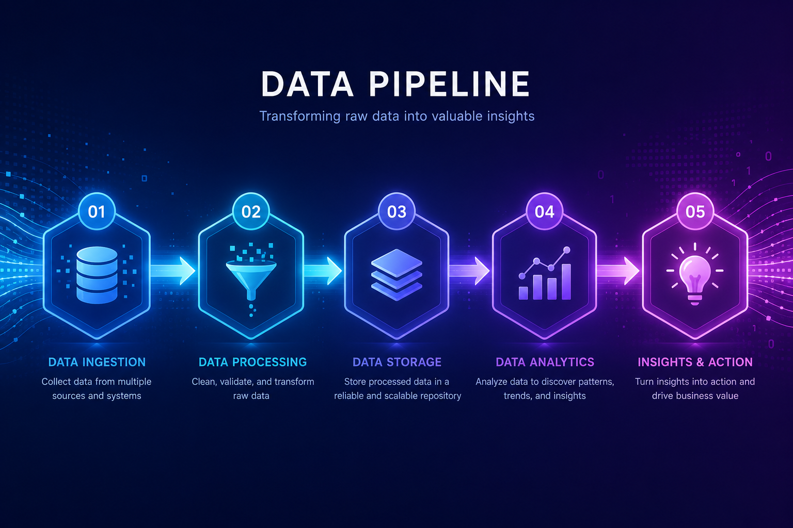
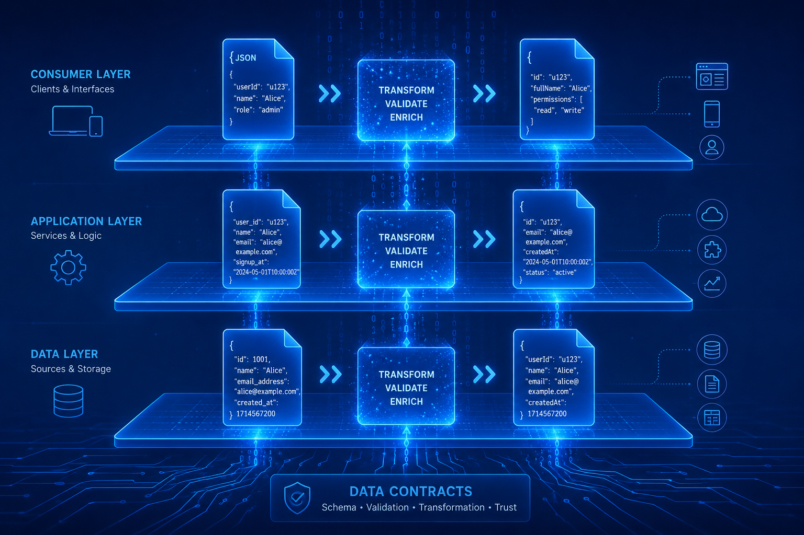
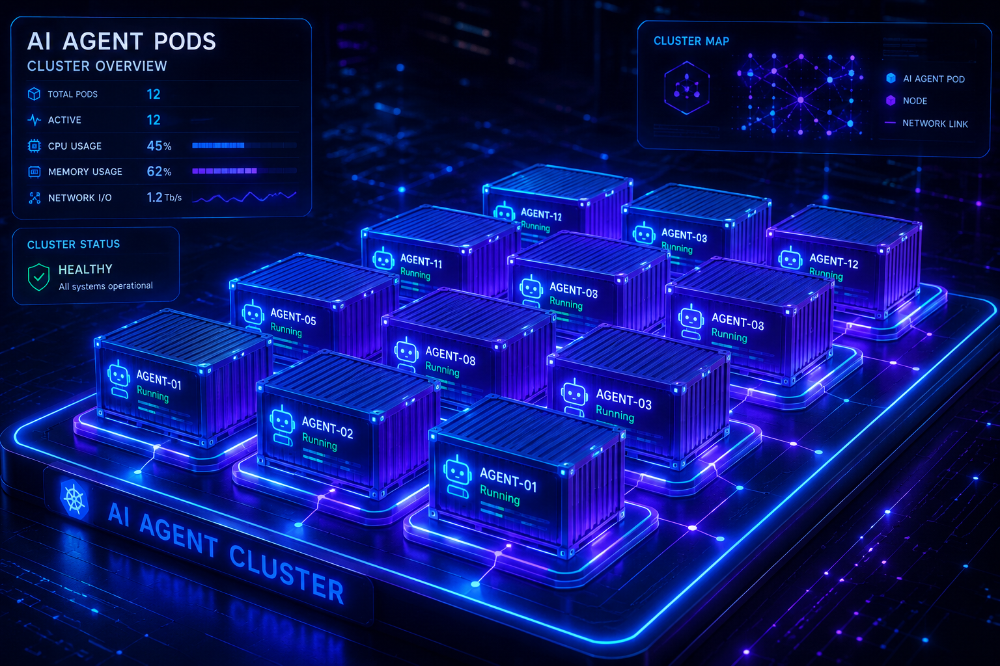

AgentFlow
多 Agent 编排平台 — 从工作流画布到 Agent 运行的完整转换链路
📅 2026-06-10
👤 廖博士 / 小马总
📄 v2.0 — 数据契约冻结
🌐 agentflow.luviewer.cloud
🎯 源编排 L0
⚙️ 核心引擎 L1
🎨 React Flow 画布
🔒 内部 KMS
🐳 Docker + Claude Code
📐 Envelope 协议
🔁 闭环反馈

🟦 直接复用 OSS
🟩 封装适配
🟥 自研核心
🟪 专用 Agent 角色
AgentFlow 是一个将可视化工作流编排与AI Agent 自动执行结合的平台。用户通过画布拖拽配线定义工作流 DAG，系统自动编译为 Agent 可执行的提示词，在 Docker 容器中通过 Claude Code CLI 驱动执行，形成完整的闭环反馈系统。
🎯 核心公式 画布节点 + 类型模板 → Compiler Agent → 完整提示词 → Docker + Claude Code → Envelope 结果 → 画布反馈
🎯 核心理念
用户说需求 → 画草稿 → 用户完善 → 自动执行 → 结果反馈。每个节点 → 完整的自然语言提示词 → Claude Code 执行。
🔁 闭环反馈
下游测试失败 → 回退上游重生成 → 控制理论负反馈。Lyapunov 稳定：每次迭代 dV/dt < 0。
🐳 运行单元
每个 Agent = Docker 容器 + Claude Code CLI。隔离、安全、资源受限。stdin 接收提示词，stdout 输出结果。
📐 数据契约
三份核心 JSON Schema：WorkflowJSON / PromptTask / Envelope。每个环节 schema 门控验证。
6+1 层级体系
| 层 | 名称 | 核心内容 | 策略 | MVP |
|---|
| L0 | 源编排 | AI 根据自然语言自动生成工作流草稿 | 🟥 自研 | Defer |
| L1 | 核心引擎 | Compiler Agent · Orchestrator · 模板系统 · 数据契约 | 🟥 自研 | ✅ |
| L2 | 开发者 SDK | 节点脚手架 · 发布工具 · 沙箱测试 | ⏳ | Defer |
| L3 | 市场 | 节点市场 · 模板库 · 版本管理 | ⏳ | Defer |
| L4 | 用户界面 | 画布 (React Flow) · 调试器 · 仪表盘 | 🟦 复用 | ✅ |
| L5 | 团队/企业 | 多用户 · RBAC · SSO · 审计日志 | ⏳ | Defer |
| L6 | 运维 | Docker Compose · 监控 · 计费 | ⏳ | Defer |
从用户画布拖拽到 Agent 结果反馈，整个系统经历 5 个阶段：
① 画布编辑
React Flow
→
② 提示词编译
Compiler Agent
→
③ 调度执行
Orchestrator
→
④ Agent 集群
Docker+CC
→
⑤ 结果汇聚
验证+反馈
各阶段输入输出
| 阶段 | 处理者 | 输入 | 输出 | 关键约束 |
|---|
| ① 画布编辑 | React Flow | 用户拖拽操作 | WorkflowJSON | schema 类型检查 |
| ② 提示词编译 | Compiler Agent | WfJSON + 模板 | PromptTask[] | 模板必须存在 |
| ③ 调度执行 | Orchestrator | PromptTask[] | Docker 容器 | 拓扑序 + 超时 |
| ④ Agent 运行 | Claude Code | 完整提示词 | Envelope JSON | schema 门控 |
| ⑤ 结果汇聚 | Orchestrator | Envelope JSON | 画布更新 | 重试/回退 |
架构全貌图
┌──────────────────────────────────────────────────────────────────┐
│ L4 画布 (React Flow 🟦) ← 用户拖拽 / 连线 / 配参 │
└──────────────────┬───────────────────────────────────────────────┘
│ WorkflowJSON
▼
┌──────────────────────────────────────────────────────────────────┐
│ L1 Compiler Agent 🟥🟪 ← 固定Claude Code │
│ ① 解析WfJSON ② 拓扑排序 ③ 模板渲染 ④ 组装 ⑤ 验证 ⑥ 输出 │
└──────────────────┬───────────────────────────────────────────────┘
│ PromptTask[]
▼
┌──────────────────────────────────────────────────────────────────┐
│ L1 Orchestrator 🟥 ← 按拓扑序调度 Docker 容器 │
│ docker run --rm --cap-drop=ALL -e KEY=$TOKEN claude --print │
└──────────────────┬───────────────────────────────────────────────┘
│ Docker 启动
┌──────────┼──────────┐
▼ ▼ ▼
┌────────┐ ┌────────┐ ┌────────┐
│Agent A │→│Agent B │→│Agent C │ ← Docker + Claude Code 🟪
└────────┘ └────────┘ └────────┘
│ │ │
└──────────┼──────────┘
│ Envelope JSON
▼
┌──────────────────────────────────────────────────────────────────┐
│ 结果汇聚 🟥 → schema校验 → 画布状态更新 → 下一节点/完成 │
└──────────────────────────────────────────────────────────────────┘
🔑 关键设计决策 每个节点不是传 JSON 参数给 Agent，而是由 Compiler Agent 用模板编译为完整的自然语言提示词。Claude Code 擅⻓理解自然语言，不需要结构化接口。
1.1 核心动机
现有的多 Agent 编排平台（n8n / Dify / Airflow / Claude Workflow Studio）都有一个共同点：用户需要手动编排每一步。用户选择节点、配置参数、连接输入输出。这是命令式编排——用户是"编程者"。
AgentFlow 的核心理念是声明式编排——用户描述想要什么，系统自动推导怎么做。用户可以只说需求，由 AI 自动生成工作流草稿并执行。
❌ 旧范式
用户 = 手动连接每个节点、配置每个参数。繁琐、易错、门槛高。
✅ 新范式
用户 = 描述需求 + 验证结果。由 AI 生成工作流草稿并执行。
🎯 差异化
Source Orchestration（源编排）— 不是编排任务，而是编排信息的来源、约束和期望产出。
1.2 设计哲学
三大核心信念：
- 草稿优先，迭代完善 — AI 生成工作流草稿，用户修改完善。协作式而非单向配置。
- 画布即协议 — 画布是用户与系统之间的共享语义层。所有节点类型定义清晰的输入输出 schema，保证连线即契约。
- 编译器模式 — 工作流不是"被执行的配置文件"，而是"被编译为提示词的源代码"。注入模板、约束、上下文，输出给 LLM 的完整指令。
1.3 源编排（Source Orchestration）差异化
源编排（Source Orchestration）是 AgentFlow 与所有现有编排平台最核心的差异化。核心概念：
| 维度 | 任务编排（传统） | 源编排（AgentFlow） |
|---|
| 声明方式 | 用户手动拖拽每个节点 | 用户描述需求，AI 自动生成草稿 |
| 节点交互 | 配置参数 → JSON 配置 | 配置约束和目标 → 完整提示词 |
| 流程控制 | 条件/循环/错误处理手动设 | 声明期望，AI 自动推导 |
| 编排对象 | 任务和数据 | 信息的来源、约束、期望产出 |
| 用户角色 | 程序员（写具体步骤） | 产品经理（说想要什么） |
| 可读性 | 节点+线=复杂网络 | 声明式描述，一目了然 |
| 扩展性 | 加节点=改流程 | 加约束=扩范围 |
1.4 控制理论联系
AgentFlow 的设计深度借鉴了钱学森《工程控制论》的思想：
| 控制理论概念 | AgentFlow 对应 | 说明 |
|---|
| 闭环反馈 (Ch.4) | Orchestrator 循环 | 每个 Agent 输出→校验→反馈→重试，形成闭环 |
| Lyapunov 稳定 (Ch.11) | 并发迭代收敛 | 定义 V(t)=错误数，确保每次迭代 dV/dt<0 |
| 自适应策略 (Ch.12) | 失败重试策略 | 环境变化时自动调整：重试/跳过/回退/终止 |
| 极值搜索 (Ch.15) | 多分支并行执行 | 同时探索多种方案，选择最优结果 |
| 噪声容忍 (Ch.16) | Schema 门控 | 统计级优化而非完美匹配 |
| 超稳定系统 (Ch.17) | 多级错误恢复 | 重试→回退→重新编译→人工介入，逐级降级 |
| 冗余可靠性 (Ch.18) | 冗余性设计 | 关键路径备选方案 |
1.5 适用与不适用场景
✅ 适用场景
- 多步骤分析链路（如：搜索 → 分析 → 生成报告）
- 代码生成与测试闭环（如：设计 → 编码 → 编译 → 测试）
- 数据处理流水线（如：采集 → 清洗 → 分析 → 可视化）
- 文档生成流水线（如：大纲 → 调研 → 撰写 → 审校）
❌ 不适用场景
- 毫秒级实时系统（延迟不可预测）
- 确定性业务逻辑（传统代码更可靠）
- 纯数据 ETL（Airflow/Prefect 更优）
- 单步简单任务（不需要编排，直接问 LLM 即可）
2.1 整体架构
AgentFlow 的系统架构由一个核心引擎、一个画布界面、一套安全基座组成。核心引擎负责工作流解析、提示词编译、Agent 调度；画布界面提供用户交互；安全基座保障密钥和容器安全。
2.2 5 阶段详细链路
阶段①：画布编辑
用户通过 React Flow 画布拖拽节点、连线、配置参数。画布输出 WorkflowJSON。
交互细节：从侧边栏拖入节点 → 点击节点弹出配置面板 → 从 output port 拖到 input port 连线 → schema 类型检查 → 实时循环依赖检测 → 导出 WorkflowJSON。
阶段②：提示词编译
Compiler Agent（固定的 Claude Code 实例）读取 WorkflowJSON，按拓扑排序，对每个节点查模板、渲染变量、生成完整提示词。
// Compiler Agent 6 步标准流程
1. 解析 WorkflowJSON → 读 global_context / nodes[] / edges[]
2. 拓扑排序 → Kahn 算法，识别 parallel 分支
3. 对每个节点执行模板渲染
4. 组装 PromptTask[] → 含 prompt / output_schema / timeout / retry / depends_on
5. 验证 → prompt 非空 / schema 完整 / 依赖链完整
6. 输出 JSON 到 stdout
阶段③：调度执行
Orchestrator 接收 PromptTask[]，按拓扑序创建 Docker 容器。串行节点顺序执行，parallel 节点并行启动。
docker run --rm \
--network none --cap-drop=ALL \
--read-only-root-filesystem \
--memory=1G --cpus=2 --pids-limit=200 \
-e ANTHROPIC_API_KEY="{kms_token}" \
-v agent-workspace:/workspace \
agentflow-agent:latest \
claude --print "{完整提示词}"
阶段④：Agent 集群运行
每个 Agent = Docker 容器中的 Claude Code CLI。stdin 接收完整提示词，stdout 输出 Envelope JSON。
Agent 输入 (stdin):
## 目标
为四旋翼无人机设计PID控制器 → 使用Ziegler-Nichols方法
## 约束
- C++实现, 基于ArduPilot框架
- 输出符合 {Kp:number, Ki:number, Kd:number}
- 限时120秒
Agent 输出 (stdout):
{
"envelope": {"type":"result","correlation_id":"pt_alg_01J..."},
"payload": {"data":{"Kp":2.5,"Ki":1.0,"Kd":0.3}},
"status": "done"
}
阶段⑤：结果汇聚
Orchestrator 收集各 Agent stdout，用 output_schema 校验 payload。通过则保存结果、更新画布状态、传递到下游。失败则按策略重试或回退。
闭环：如果测试 Agent 报告失败 → Orchestrator 重新编译上游 Task → 启动新容器重试。最大深度 3 级。
2.3 6+1 层级体系
L0 — 源编排（自研 🟥·Defer）
职责：AI 根据自然语言自动生成工作流草稿。用户说需求 → LLM 分析分解 → 匹配节点 → 自动连线 → 用户审阅完善。
流程：用户输入自然语言 → Planner Agent 分解意图 → Agent Selector 匹配节点 → Workflow Generator 自动连线 → Canvas 显示草稿 → 用户修改 → 执行。
L1 — 核心引擎（自研 🟥·MVP）
组件：
- Prompt Compiler Agent — WorkflowJSON → PromptTask 编译
- Orchestrator 调度器 — 容器生命周期、拓扑调度、错误恢复
- 模板系统 — YAML 模板文件、变量渲染、版本管理
- 数据契约 — WorkflowJSON / PromptTask / Envelope JSON 三份 Schema
- Schema 门控 — JSON Schema 输入输出校验
L4 — 用户界面（React Flow 🟦·MVP）
组件：画布编辑（React Flow）、节点配置面板、调试器（执行历史、断点）、仪表盘（状态监控、用量统计）。
2.4 OSS 复用策略
基于「先找，找不到再造」原则的系统评估：
| 模块 | 分类 | 方案 | 理由 |
|---|
| React Flow | 🟦 复用 | npm install @xyflow/react | 37K⭐，成熟拖拽画布，社区活跃 |
| Claude Code | 🟦 复用 | Anthropic CLI 子进程 | 标准 Agent 运行时，不需要自研 LLM 接口 |
| Claude SDK | 🟦 复用 | Anthropic SDK | 标准 API 封装 |
| Hermes Agent | 🟦 复用 | 现有 Hermes 看板 | 状态管理/任务 DAG 直接复用 |
| Docker | 🟩 适配 | Docker SDK for Python | 标准容器引擎，加安全加固层 |
| JSON Schema | 🟩 适配 | jsonschema / Ajv | 标准库，加 AgentFlow 特有扩展 |
| Jinja2 | 🟩 适配 | Python Jinja2 | 成熟模板引擎，加变量绑定层 |
| HashiCorp Vault | 🟩 适配 | Vault API + KMS 层 | 密钥存储后端，加 session token 签发 |
| 工作流编译引擎 | 🟥 自研 | Python 实现 | 核心差异化，无合适 OSS |
| Orchestrator 调度 | 🟥 自研 | Python 实现 | Agent 生命周期 + Envelope 协议 |
| 模板系统 | 🟥 自研 | YAML + 渲染器 | AgentFlow 特有设计 |
| 源编排 L0 | 🟥 自研 | Claude Code 驱动 | LLM 工作流生成，差异化命脉 |
📊 总结：12 个核心模块中，4 个直接复用（🟦）、4 个封装适配（🟩）、4 个自研（🟥）。自研部分集中在差异化价值上。

3.1 总览与关系
三份核心数据结构构成了 AgentFlow 的数据流骨干：
画布 ──→ WorkflowJSON ──→ Compiler Agent ──→ PromptTask[] ──→ Orchestrator ──→ Docker/Agent
│
画布 ←──── 结果汇聚 ←──── Envelope JSON ←────────┘
| 契约 | 生产者 → 消费者 | 作用 | 关键字段 |
|---|
| WorkflowJSON | 画布 → Compiler | 声明工作流 DAG | nodes[], edges[], global_context |
| PromptTask | Compiler → Orchestrator | 定义可执行 Agent 任务 | prompt, output_schema, timeout, retry |
| Envelope JSON | Agent → Orchestrator | 封装执行结果 | payload.data, status, metrics |
3.2 WorkflowJSON — 画布输出
生产者：画布 UI (React Flow)。消费者：Prompt Compiler Agent。
3.2.1 完整 Schema
{
"version": "1.0.0",
"workflow_id": "wf_01JAR3...",
"name": "PID控制器全流程",
// ── 全局上下文 ──
"global_context": {
"goal": "为四旋翼无人机设计并实现PID控制器",
"language": "zh-CN",
"constraints": [
"C++实现，基于ArduPilot框架",
"增益Kp范围0~10",
"收敛时间<2s"
]
},
// ── 节点定义 ──
"nodes": [
{
"id": "alg",
"type": "algorithm-designer", // → templates/algorithm-designer.yaml
"label": "算法设计",
"params": { // 节点参数，注入模板 {params.xxx}
"plant": "quadcopter",
"method": "Ziegler-Nichols"
},
"output_schema": { // 输出校验规则
"type": "object",
"properties": {
"Kp": {"type":"number", "min":0, "max":10},
"Ki": {"type":"number"},
"Kd": {"type":"number"}
}
},
"timeout_s": 120, // 执行超时
"retry": 2, // 失败重试次数
"on_failure": "retry" // retry | skip | stop
}, {
"id": "dev",
"type": "software-dev",
"label": "代码实现",
"params": {"lang": "cpp"},
"input_schema": { // $ref 引用上游 output
"$ref": "#/nodes/alg/output_schema"
},
"output_schema": {"type": "source_code"},
"timeout_s": 300,
"retry": 1
}, {
"id": "test",
"type": "compile-test",
"label": "编译测试",
"params": {"compiler": "scons"},
"input_schema": {"$ref": "#/nodes/dev/output_schema"},
"output_schema": {
"type": "test_report",
"properties": {
"passed": {"type": "boolean"},
"errors": {"type": "array"}
}
},
"timeout_s": 180,
"retry": 0
}
],
// ── 边定义 ──
"edges": [
{"source": "alg", "target": "dev"},
{"source": "dev", "target": "test"}
]
}
⚠️ $ref 引用机制 input_schema 的 $ref 引用上游 output_schema，编译期检测类型不匹配。画布连线时类型不匹配禁止连线或显示红色警告。
3.3 PromptTask — Compiler 输出
生产者：Compiler Agent。消费者：Orchestrator。
[
{
"task_id": "pt_alg_01J...",
"workflow_id": "wf_01J...",
"node_id": "alg",
"node_type": "algorithm-designer",
"sequence": 1, // 拓扑序
"parallel_group": null, // 同组并行
"depends_on": [], // 上游依赖
// ── 核心：完整自然语言提示词 ──
"prompt": "## 目标\n为四旋翼无人机设计PID控制器\n→ 使用Ziegler-Nichols方法\n\n## 约束\n- C++实现\n- 基于ArduPilot框架\n- 输出符合 {Kp:number, Ki:number, Kd:number}\n- 限时120秒\n\n## 输出格式\nEnvelope JSON: {payload: {Kp:..., Ki:..., Kd:...}}\n\n## 成功标准\npayload 通过 schema 验证",
"output_schema": { "type": "object", "properties": {...} },
"timeout_s": 120,
"retry": 2
}, {
// ... dev 节点
}
]
编译流程详解
Compiler Agent 将 WorkflowJSON 转为 PromptTask 的 7 步过程：
- DAG 构建 — 从 edges[] 建立邻接表，无环校验
- 拓扑排序 — Kahn 算法：入度为 0 的节点入队，依次处理
- 并行分组 — 拓扑排序中同一 depth 且无依赖的节点标记为同一 parallel_group
- 依赖推导 — 对每个节点，找到其上游 edges 对应的 task_id，填入 depends_on
- Prompt 拼接 — 加载模板，注入变量（global.goal, params, output_schema 等）
- Schema 内联 — output_schema 从节点定义中继承到 PromptTask
- 参数继承 — timeout_s, retry 从节点定义继承
💡 PromptTask 是系统的"核心货币" — 所有的复杂性在编译阶段被消化为一段纯粹的自然语言提示词。Orchestrator 和 Agent 只需理解这段提示词。
3.4 Envelope JSON — Agent 输出
生产者：Claude Code Agent (Docker 容器内)。消费者：Orchestrator。
{
// ── 信封 ──
"envelope": {
"message_id": "msg_01J...", // UUID v7
"correlation_id": "pt_alg_01J...", // 关联到 PromptTask
"type": "result", // result | error | ack | heartbeat | progress | control
"timestamp": 1780947845
},
// ── 来源 ──
"source": {
"agent_id": "claude-code-7a...",
"task_id": "pt_alg_01J..."
},
// ── 业务负载 ──
"payload": {
"content_type": "application/json",
"schema_ref": "node:alg:output",
"data": { // 实际业务数据
"Kp": 2.5, "Ki": 1.0, "Kd": 0.3
}
},
// ── 状态 ──
"status": "done", // done | error | partial | timeout | cancelled
// ── 用量指标 ──
"metrics": {
"tokens_used": 4523,
"elapsed_ms": 45200,
"model": "claude-sonnet-4",
"exit_code": 0
}
}
消息类型枚举
| type | 方向 | 说明 |
|---|
| result | Agent → Orchestrator | 正常执行结果 |
| error | Agent → Orchestrator | 执行出错 |
| ack | 双向 | 消息确认接收 |
| heartbeat | Agent → Orchestrator | 存活心跳 |
| progress | Agent → Orchestrator | 执行进度更新 |
| control | Orchestrator → Agent | 暂停/恢复/取消 |
| chunk | Agent → Orchestrator | 流式输出片段 |
✅ Schema 门控：Orchestrator 用 PromptTask.output_schema 校验 Envelope.payload.data。不通过则按 on_failure 策略处理（重试/跳过/终止）。
4.1 Compiler 固定 Prompt
Compiler Agent 是固定的专用 Claude Code 实例。它使用一个永恒的、不变的 System Prompt：
你是一个 Workflow Compiler Agent。你的职责是将 WorkflowJSON 编译为一组 PromptTask。
## 输入格式
你从 stdin 接收一个 WorkflowJSON 对象。它包含：
- global_context: 全局目标、语言、约束
- nodes[]: 节点定义（id, type, label, params, schemas, timeout, retry）
- edges[]: 依赖关系（source → target）
## 可用资源
- templates/ 目录：所有节点类型的 YAML 模板文件
## 执行步骤
步骤 1：解析 WorkflowJSON
读取 global_context, nodes[], edges[]
步骤 2：拓扑排序（Kahn 算法）
queue = 入度为 0 的节点
while queue:
node = queue.pop()
添加 node 到排序结果
标记 node 的 incoming 边为已处理
如果下游节点入度变为 0 → 入队
同一 depth + 无依赖的节点 → parallel_group
步骤 3：模板渲染（对每个节点）
a. 查找 templates/{node.type}.yaml
b. 如果模板不存在 → 报错终止
c. 按以下映射注入变量：
变量 来源
{global.goal} global_context.goal
{params.xxx} node.params.xxx
{output_schema} 序列化 node.output_schema
{upstream_node_label} 上游节点 label
{upstream_output} 上游 output_schema（运行时注入实际值）
{timeout_s} node.timeout_s
{retry} node.retry
{global.constraints} global_context.constraints
d. 列表变量用 bullet 渲染
步骤 4：组装 PromptTask
每个 Task 包含 task_id, workflow_id, node_id, node_type,
sequence, parallel_group, depends_on[], prompt, output_schema,
timeout_s, retry
步骤 5：验证
- prompt 不为空
- output_schema 结构完整
- depends_on 链完整（无悬空引用）
- 无循环依赖
步骤 6：输出
直接输出 PromptTask[] JSON 到 stdout。不要添加额外说明。
🔄 自洽：Compiler Agent 自己也是 Claude Code。AgentFlow 的"Agent 运行在 Docker + Claude Code 中"对 Compiler Agent 自身同样成立。它只是被分配了一个不同的 Prompt。
4.2 模板系统设计
模板系统是 AgentFlow 的核心资产。每个节点类型对应一个 YAML 模板文件，定义了如何将节点配置渲染为 Agent 提示词。
📂 存储
templates/{node_type}.yaml
🔌 可扩展
新增节点类型 = 新增一个 YAML 模板文件
模板设计原则：
- 模板即契约 — 模板定义了 Agent 的行为边界和输出规范
- 变量驱动的提示词 — 所有动态内容通过变量注入，模板本身保持结构化
- 可嵌套、可组合 — 复杂任务可以拆分为子模板
- 向后兼容 — 模板版本化，旧工作流可以锁定旧版模板
模板注册流程：
- 在
templates/ 目录下创建 {type_name}.yaml
- 定义 name, version, params_schema, prompt_template
- 在 Agent 注册表中注册对应类型
- 画布中即可使用该节点类型
模板文件（YAML）完整内容
4.3 algorithm-designer.yaml
# templates/algorithm-designer.yaml
name: algorithm-designer
version: "1.0.0"
description: "算法设计Agent：从需求到控制参数"
icon: "🧮"
category: "算法"
params_schema:
type: "object"
properties:
method: { type: "string", default: "Ziegler-Nichols" }
prompt_template: |
## 目标
{global.goal} → 你需要设计实现该目标的核心算法。
{if params.method}推荐使用 {params.method} 方法。{endif}
## 约束
- 输出必须严格符合以下 schema:
{output_schema}
- 全局约束:
{global.constraints}
- 限时 {timeout_s} 秒
- 失败后可重试 {retry} 次
- 禁止编造数据
## 输入上下文
{if upstream_output}
上游节点 ({upstream_node_label}) 输出:
{upstream_output}
{else}
(无上游输入 — 首节点)
{endif}
## 输出格式
Envelope JSON:
```json
{
"type": "result",
"payload": {<符合 output_schema>},
"status": "done"
}
```
## 成功标准
1. payload 通过 output_schema 验证
2. 所有数值在物理合理范围内
4.4 software-dev.yaml
# templates/software-dev.yaml
name: software-dev
version: "1.0.0"
description: "软件开发Agent：从参数到实现代码"
icon: "💻"
category: "开发"
params_schema:
type: "object"
properties:
lang: { type: "string", default: "cpp" }
prompt_template: |
## 目标
根据上游的参数，使用 {params.lang} 编写高质量的实现代码。
## 约束
- 输出必须符合 output_schema: {output_schema}
- 编程语言: {params.lang}
- 包含完整的单元测试
- 代码必须可编译通过
- 遵循 {params.lang} 社区最佳实践
- 限时 {timeout_s} 秒
## 输入上下文
上游节点 ({upstream_node_label}) 输出:
{upstream_output}
## 输出格式
1. 代码文件写入 /workspace/output/ 目录
2. stdout 输出 Envelope JSON 报告完成状态
## 成功标准
- 编译通过
- 所有测试用例通过
- 代码风格符合规范
4.5 compile-test.yaml
# templates/compile-test.yaml
name: compile-test
version: "1.0.0"
description: "编译测试Agent：验证代码的正确性"
icon: "🧪"
category: "测试"
params_schema:
type: "object"
properties:
compiler: { type: "string", default: "scons" }
prompt_template: |
## 目标
使用 {params.compiler} 编译并测试项目代码。
## 约束
- 必须报告所有编译错误和测试结果
- 测试覆盖率不低于 80%（如适用）
- 限时 {timeout_s} 秒
## 输入上下文
上游节点 ({upstream_node_label}) 提供的代码:
{upstream_output}
## 输出格式
Envelope JSON:
```json
{
"payload": {
"passed": true/false,
"errors": ["错误1", ...],
"test_results": [{"name":"test_x","passed":true}]
}
}
```
## 成功标准
编译通过 + 所有测试 PASS
## 如果失败
在 payload.fix_suggestions 中输出具体修复建议：
- 每个编译错误的准确行号和修复方案
- 测试失败的根因分析
⚡ 职责
接收 PromptTask → 拓扑调度 → docker run → 读 stdout → schema 校验 → 传递
🛡️ 错误处理
超时终止 · 指数退避重试 · 增量回滚 · parallel 原子性
📊 状态管理
WAL 持久化 · 心跳检测 · 断点续传 · 画布状态同步
5.1 核心循环（8 步）
| 步 | 操作 | 说明 |
|---|
| 1 | 拓扑遍历 | 按 sequence 顺序，识别可执行的节点（所有 depends_on 已完成） |
| 2a | 串行执行 | 单节点 → 直接创建 Docker 容器 |
| 2b | 并行执行 | parallel_group 相同 → 同时创建多个 Docker 容器 |
| 3 | Docker 启动 | docker run --rm -e KEY={token} agentflow-agent claude --print "{prompt}" |
| 4 | 运行时注入 | 将上游实际输出的 payload.data 替换到 {upstream_output} |
| 5 | 监控 | 监听容器的 stdout，解析 Envelope JSON。超时则 docker kill |
| 6 | 验证 | 用 PromptTask.output_schema 校验 payload.data |
| 7a | 成功分支 | 保存结果 → 检查是否所有节点完成 → 同步画布状态 |
| 7b | 失败分支 | 按 retry/on_failure 策略处理（重试/跳过/终止） |
| 8 | 反馈循环 | 测试失败 → 重新编译上游 Task → 启动新容器重试（深度≤3） |
// 伪代码
def orchestrate(prompt_tasks):
dag = build_dag(prompt_tasks)
ready_queue = get_roots(dag)
completed = {}
while ready_queue:
# 并行批次
batch = [t for t in ready_queue if same_parallel_group(t)]
for task in batch:
# 注入上游输出
inject_upstream_output(task, completed)
# 启动容器
result = docker_run(task)
# 验证
if validate(result, task.output_schema):
completed[task.task_id] = result
else:
handle_failure(task, result)
# 更新就绪队列
ready_queue = get_ready(dag, completed)
return completed
5.2 容器生命周期
5.2.1 镜像构建
# Dockerfile
FROM debian:bookworm-slim
RUN apt-get update && apt-get install -y \
curl git python3 python3-pip make gcc g++ \
scons cmake # 基础开发工具
# 安装 Claude Code CLI
RUN npm install -g @anthropic-ai/claude-code
# 非 root 用户运行
RUN useradd -m -s /bin/bash agent
USER agent
WORKDIR /workspace
ENTRYPOINT ["claude"]
完整运行参数
docker run --rm \
--name agentflow-{task_id} \
--network none \ # 无网络（除非需要调用外部 API）
--cap-drop=ALL \ # 最小权限
--cap-add=NET_RAW,NET_BIND_SERVICE \ # 仅需的网络权限
--security-opt=no-new-privileges:true \
--security-opt=seccomp=agentflow-seccomp.json \
--read-only-root-filesystem \
--tmpfs /tmp:noexec,nosuid,size=100M \
--memory=1G \
--cpus=2 \
--pids-limit=200 \ # 防 fork 炸弹
-v agentflow-{task_id}:/workspace \ # 独立卷
-e ANTHROPIC_API_KEY="{kms_token}" \
agentflow-agent:latest \
--print "{prompt}"
5.3 错误恢复机制
三阶段防御体系：预防 → 恢复 → 持久化
错误分类
| 类别 | 场景 | 级别 | 恢复策略 |
|---|
| 超时 | Agent 处理超过 timeout_s | 常见 | docker kill → 重试 |
| Schema 不匹配 | payload 不符合 output_schema | 逻辑 | 重试 / 跳过 |
| 容器崩溃 | docker exit non-zero | 严重 | 重试（指数退避） |
| 资源耗尽 | OOM / OOD | 严重 | 标记失败，跳过 |
| Orchestrator 崩溃 | 进程异常退出 | 致命 | WAL 恢复 |
| 网络故障 | Docker daemon 不通 | 致命 | 等待后重试 |
| 磁盘满 | 日志/卷写满 | 致命 | 终止所有任务 |
| KMS 不可用 | Token 签发失败 | 致命 | 不能启动新容器 |
| 模板缺失 | node.type 无对应模板 | 编译期 | 编译失败，报错 |
重试策略（指数退避）
def compute_delay(attempt):
base = 2 # 秒
cap = 60 # 最大间隔
jitter = random(0, 0.1 * base * 2**attempt)
return min(base * 2**attempt, cap) + jitter
5.3.1 WAL 预写日志
WAL（Write-Ahead Log）是 Orchestrator 崩溃恢复的核心。所有状态变更先写入日志文件，再执行实际操作。
// WAL 日志格式（JSON Line 协议，每行一条）
{"seq":1, "ts":1780947845, "event":"task_start", "task_id":"pt_alg_..."}
{"seq":2, "ts":1780947846, "event":"container_start", "task_id":"pt_alg_...", "container_id":"abc123"}
{"seq":3, "ts":1780947895, "event":"task_complete", "task_id":"pt_alg_...", "result":{...}}
{"seq":4, "ts":1780947896, "event":"task_start", "task_id":"pt_dev_..."}
5.3.2 断点续传
Orchestrator 崩溃重启后的恢复流程：
- 读取 WAL 日志到末尾
- 重建 completed_tasks 字典（已完成的任务）
- 重建 running_tasks 集合（启动但未完成的任务 → kill 旧容器）
- 重新计算 ready_queue（未完成且依赖已完成的节点）
- 从断点继续执行，不丢失任何已完成的节点
⚠️ 设计约束：WAL 不存储 Agent stdout 的完整内容（可能很大），只存储结果路径和 schema 校验结果。Envelope payload 存储在独立的结果存储中，WAL 记录引用。

6.1 类型注册表
每个 Agent 类型在注册表中定义其元信息。Agent 类型决定了使用的系统提示词、默认参数、允许的工具和成本乘数。
# agent-registry.yaml — Agent 类型注册表
agent_types:
algorithm-designer:
description: "算法分析、设计与参数整定"
icon: "🧮"
category: "算法"
base_image: "agentflow-agent:latest"
default_timeout_s: 120
default_retry: 2
system_prompt: "你是一个专业的控制系统算法设计专家。擅长频率域、时域分析。"
allowed_tools: ["python", "bash", "read", "write", "edit"]
cost_multiplier: 1.0
software-dev:
description: "嵌入式软件代码实现"
icon: "💻"
category: "开发"
base_image: "agentflow-agent:latest"
default_timeout_s: 300
default_retry: 1
system_prompt: "你是一个专业的嵌入式软件工程师。擅长C/C++、ArduPilot框架。"
allowed_tools: ["python", "bash", "read", "write", "edit", "compile"]
cost_multiplier: 1.5
compile-test:
description: "编译验证与测试执行"
icon: "🧪"
category: "测试"
base_image: "agentflow-agent:latest"
default_timeout_s: 180
default_retry: 0
system_prompt: "你是一个严谨的测试工程师。重构但不改变功能逻辑。"
allowed_tools: ["python", "bash", "read", "write", "compile", "test"]
cost_multiplier: 0.8
Agent 生命周期状态机
pending → running → completed ──→ cleaned
↘ failed ──→ cleaned
↘ retry → running
| 状态 | 含义 | Orchestrator 动作 |
|---|
| pending | 容器创建中 | docker create，注入 token |
| running | Claude Code 执行中 | 监听 stdout，计时 |
| completed | 成功输出合法 Envelope | 校验 → 保存 → 传下游 |
| failed | 超时/崩溃/schema 失败 | 按策略重试/跳过/终止 |
| cleaned | 容器已删除 | 清理卷和日志 |
6.2 安全架构
6.2.1 内部 KMS 设计
核心理念：Orchestrator 不持有原始 API Key。所有密钥由 KMS 集中管理，Agent 容器只获得限时、限 scope 的 session token。
KMS Token 格式
{
"token_id": "tok_01J...",
"agent_id": "claude-code-7a...",
"issued_at": 1780947845,
"expires_at": 1780948145, // 最长 5 分钟
"max_tokens": 50000, // 用量上限
"workflow_id": "wf_01J...",
"signature": "hmac_sha256..." // KMS 签名防篡改
}
KMS API
POST /kms/issue → 签发 Token（需要 workflow_id + agent_id claim）
POST /kms/revoke → 吊销 Token
GET /kms/audit → 查询 Token 使用记录
6.2.2 容器安全基线
| 策略 | 配置 | 说明 |
|---|
| Capabilities | --cap-drop=ALL | 移除所有特权，按需添加 |
| Rootless | 非 root 用户运行 | USER agent 而非 root |
| Read-only FS | --read-only-root-filesystem | 只读根文件系统 |
| Network | --network none | 默认无网络 |
| Memory | --memory=1G | 防 OOM 影响宿主机 |
| CPU | --cpus=2 | 限制 CPU 使用 |
| PIDs | --pids-limit=200 | 防 fork 炸弹 |
| Seccomp | seccomp 配置文件 | 限制系统调用 |
| Privilege | no-new-privileges | 防提权 |
| Volume | 独立卷 per Agent | Agent 间不共享文件 |
风险矩阵
| 风险 | 级别 | 缓解方案 |
|---|
| Docker 逃逸 | 🔴 严重 | 最小权限配置，拒绝 privilege / pid=host / socket 挂载 |
| 密钥泄露 | 🔴 严重 | KMS 签发 session token，限时吊销，不外传原始 key |
| Orchestrator 单点攻破 | 🔴 严重 | WAL 持久化 + 操作签名 + append-only 审计日志 |
| 共享卷跨容器攻击 | 🟡 高 | 每 Agent 独立卷，数据通过 Envelope JSON 传递 |
| API Key 用量炸弹 | 🟡 高 | Token 限时 + 用量跟踪 + 阈值告警 |
| 输出敏感信息泄露 | 🟡 高 | 输出内容审查 + 审计日志 + 屏蔽凭据模式 |
🚫 安全铁律 绝不允许 --privileged、--pid=host、--network=host、挂载 Docker Socket。Orchestrator 不持有原始 API Key。
6.2.3 审计日志
所有安全事件记录在 append-only 审计日志中，HMAC 链式签名防篡改：
// 审计日志事件类型
event_types:
- token_issued // Token 签发
- token_revoked // Token 吊销
- token_expired // Token 过期
- container_started // 容器启动
- container_crashed // 容器崩溃
- schema_failure // Schema 校验失败
- timeout_occurred // 执行超时
- retry_attempted // 重试执行
- workflow_completed // 工作流完成
- workflow_failed // 工作流终止
7.1 React Flow 集成方案
画布 UI 基于 React Flow (xyflow) 实现，37K⭐，成熟稳定的拖拽画布库。
🎨 核心组件
Node Palette（侧边节点库）、Canvas（拖拽画布）、Config Panel（配置面板）、Status Bar（执行状态条）
🔌 关键功能
节点拖拽、Port-to-Port 连线、实时 Schema 类型检查、循环依赖检测、WorkflowJSON 导入导出、执行状态着色
节点交互流程
- 从左侧 Node Palette 将节点类型拖入画布
- 点击节点 → 弹出配置面板（选择类型、填写 params、查看 input/output Schema）
- 从一个节点的 output port 拖线到另一个节点的 input port
- Port 颜色表示类型匹配：绿色=类型匹配，红色=不匹配
- 画布底部显示验证状态：节点数、连线数、类型错误数
执行状态视觉反馈
| 状态 | 节点着色 | 边框样式 |
|---|
| 待执行 | 灰色 (#d1d5db) | 实线 |
| 运行中 | 蓝色 (#3b82f6) + 脉冲动画 | 虚线 |
| 成功 | 绿色 (#10b981) + 对勾 | 实线加粗 |
| 失败 | 红色 (#ef4444) + 叉号 | 实线加粗 |
关键技术细节
- 布局：使用 dagre 自动布局算法，从上到下排列
- Minimap：支持缩略图导航，适合大型工作流
- 撤销/重做：基于快照栈的撤销系统（最多 50 步）
- 自动保存：每次编辑操作后 2 秒自动保存到 localStorage
- WorkflowJSON 导出：右键菜单"导出"或快捷键 Ctrl+S
路线图总览
📋 Phase 1
方案定稿
Week 1-2
数据契约冻结 · 画布 UI 设计 · Spec 文档
🎯 M1: Week 2
🔧 Phase 2
MVP 实现
Week 3-8
Compiler Agent · 3 模板 · Orchestrator · 画布 · 端到端跑通
🎯 M2: Week 8
🚀 Phase 3
生产增强
Week 9-12
KMS · 模板管理 UI · 并行执行 · 闭环反馈 · 执行历史
🎯 M3: Week 12
🌐 Phase 4
生态开放
Week 13-16
SDK · 节点市场 · RBAC · Docker Compose · L0 源编排
🎯 M4: Week 16
8.1 Phase 1 — 方案定稿（Week 1-2）
目标：冻结所有设计方案，形成可执行的技术规格文档。
前置条件：无（起始阶段）
任务清单：
| ID | 任务 | 负责人 | 产出 |
|---|
| P1-1 | 数据契约 schema 冻结 | 架构师 | WorkflowJSON / PromptTask / Envelope JSON 最终定稿 |
| P1-2 | 画布 UI 低保真原型 | 前端 | 布局、交互流程、组件树 |
| P1-3 | 画布 UI 高保真原型 | 前端 | 节点样式、连线动效、状态反馈 |
| P1-4 | Spec 文档撰写 | 架构师 | 完整技术规格文档 |
交付物：数据契约冻结报告 · 画布 UI 高保真原型 · Spec 文档
8.2 Phase 2 — MVP 实现（Week 3-8）
目标：跑通端到端链路：画布 → Compiler → Orchestrator → Agent → 结果反馈。
前置条件：Phase 1 完成，数据契约冻结
任务清单：
| ID | 任务 | 工时 | 依赖 | 描述 |
|---|
| P2-1 | Compiler Agent | 1 周 | — | 实现固定 Prompt、模板渲染、WorkflowJSON 编译 |
| P2-2 | 3 个基础模板 | 0.5 周 | P2-1 | algorithm-designer / software-dev / compile-test |
| P2-3 | Orchestrator 核心循环 | 1.5 周 | P2-1 | 拓扑排序 + Docker 生命周期 + schema 校验 |
| P2-4 | React Flow 画布 | 2 周 | — | 节点拖拽 + 连线 + 配置面板 + WfJSON 导出 |
| P2-5 | 端到端集成 | 1 周 | 全部 | 全链路联通 + 冒烟测试 |
交付物：端到端可运行的 MVP · 画布导出一个简单工作流 → 编译 → 执行 → 结果返回
8.3 Phase 3 — 生产增强（Week 9-12）
目标：使 AgentFlow 具备生产级可靠性、安全性和可观测性。
前置条件：Phase 2 MVP 跑通
任务清单：
| ID | 任务 | 描述 |
|---|
| P3-1 | KMS 集成 | Vault 后端 + Session Token 签发 + 用量跟踪 |
| P3-2 | 模板管理 UI | 在线编辑 / 版本管理 / 新增节点类型 |
| P3-3 | 并行执行引擎 | parallel_group 真正并行 + 原子性保证 |
| P3-4 | 闭环反馈 | 测试失败自动重试上游 + 最大深度限制 |
| P3-5 | 执行历史 + 重放 | WAL 驱动的执行回放和审计 |
| P3-6 | 内测 v0.2.0 | 内部使用、修复 bug、打磨体验 |
交付物：AgentFlow v0.2.0 · 安全性审查报告 · 执行历史可回溯
8.4 Phase 4 — 生态开放（Week 13-16）
目标：开放生态，让第三方开发者可以贡献节点类型。
前置条件：Phase 3 生产级系统稳定运行
任务清单：
| ID | 任务 | 描述 |
|---|
| P4-1 | Python SDK + PyPI 发布 | Agent 节点脚手架工具、测试沙箱 |
| P4-2 | 节点市场 | 搜索 / 安装 / 评分 / 版本管理 |
| P4-3 | 多用户 + RBAC | 团队协作、权限控制 |
| P4-4 | Docker Compose 部署 | 一键部署方案 |
| P4-5 | L0 源编排 | AI 根据自然语言自动生成工作流草稿 |
| P4-6 | 公测 v1.0.0-beta | 开放注册、文档、社区支持 |
交付物：AgentFlow v1.0.0-beta · SDK · 节点市场 · 一键部署